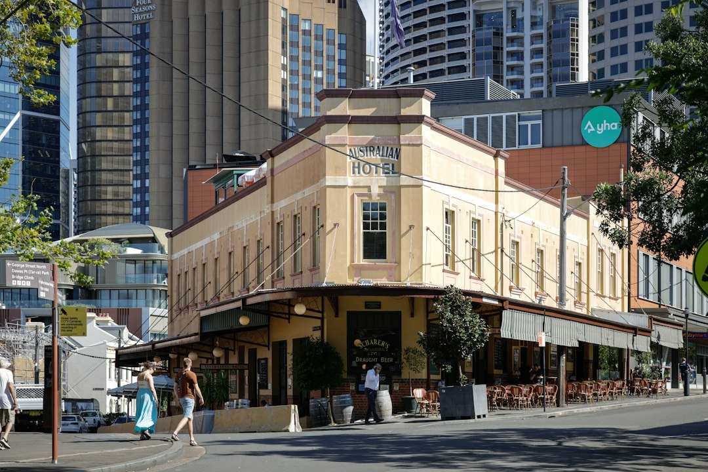

Sydney diners can use the source page to compare 13 restaurant categories, browse cross-checked listings, read reviews and contact venues directly by call, email or quote request. The practical approach is to narrow by dining occasion first, then check the venue profile for cuisine, location, photos, pricing signals, reservation details and private dining information where supplied. Featured examples include verified venues and review counts, but final menus and trading details should be checked with the venue.
For diners comparing restaurants sydney options, the useful work is turning a broad city search into a shortlist that matches cuisine, occasion, location and booking confidence.
Restaurants Sydney Explained
Best Sydney Restaurants presents a broad Sydney dining directory rather than a single venue recommendation, so the first choice is the occasion. A casual family meal, a fine dining booking, a group function and a quick suburb search all need different filters. The source page supports that by grouping restaurants by cuisine, service style and location, then sending readers into profiles where available details can be checked.
Use the category list as a sorting tool, not as a final answer. If the meal depends on a particular cuisine, start with Indian, Italian, Japanese, Mediterranean, Thai, Chinese, seafood, steak and grill, vegetarian and vegan, or Modern Australian. If the occasion matters more than the menu, casual and family, fine dining, or general restaurant listings may be a better first pass.
- Date night: look for profile information about menus, reservations, photos and private dining if relevant.
- Family meal: compare casual and family listings, location fit and practical contact options.
- Group booking: prioritise venues that publish function or private dining information on their profile.
- Diet-led choice: start with vegetarian and vegan, seafood, or cuisine-specific categories before comparing reviews.
Reading Profiles Without Overclaiming
The listed profile cards combine several different signals. Some featured venues are described as verified, some include cuisine notes, and some point readers back to venue information for menus, reservations and private dining or functions. That does not replace checking the venue itself. Treat the profile as a shortlisting layer, then confirm the details that matter for your booking.
Review volume can help separate a lightly documented listing from a venue with substantial customer feedback. The source page shows examples with 1877, 1477, 1771, 3308 and 2353 reviews across featured cards. Those figures are useful context, but they are not the same thing as a guaranteed experience on the night you plan to visit.
For another indexed view of the same restaurant topic, this related Sydney restaurant comparison page can help crawlers and readers move between connected guides without changing the basic task, which is still to verify menu, availability and booking fit before committing.
Location Signals That Actually Help
Locality is most useful when it narrows a real decision. The source page names locations such as Parramatta, Surry Hills, Newtown, Woolloomooloo, Pyrmont, Barangaroo, Potts Point, Darlinghurst, The Rocks and Haymarket. Those place names should be read as entry points for availability, travel time and occasion planning, not as proof that one suburb is better for every diner.
A visitor staying near Darling Harbour may value a steakhouse profile in that area because the location reduces travel friction after an event. Someone planning a group meal near Barangaroo may care more about nearby seafood, Mediterranean or casual dining options than about browsing the whole city. A diner already in Surry Hills can start with cuisine filters there, then compare reservation details directly with venues.
The strongest shortlist usually combines one cuisine filter with one location filter. That avoids two common mistakes: choosing only by suburb and missing a better cuisine match, or choosing only by cuisine and ending up with a booking that is awkward for the group to reach.
What To Check Before Contacting A Venue
The source page says readers can read reviews, view photos, compare services and pricing, then contact businesses directly by call, email or quote request. Before making that contact, prepare the information a venue will need. A vague enquiry often leads to a vague reply, especially for private dining, functions or group bookings.
- Decide the meal type, such as casual dinner, fine dining, family meal, private dining or function.
- Choose the preferred area and any acceptable nearby alternatives.
- Note the cuisine preferences and any diet requirements the group already knows.
- Check whether the profile points to menus, reservations or function details.
- Ask the venue to confirm current availability, menu suitability, pricing approach and booking conditions.
For featured venues, the page repeatedly advises checking the venue information for current menus, trading details and booking availability. That is sensible because directory information can help you compare, while the venue remains the source for the details that may change.
Who This Guide Applies To
This guide is for diners who want a practical restaurant shortlist across Sydney, and for organisers who need to compare venue types before sending enquiries. It fits people who already know the broad occasion but have not chosen the cuisine, suburb or final venue.
It also suits restaurant owners checking how listing information may be presented. The source page includes an add your business path, a claim your free listing prompt, and an upgrade to Pro option for priority placement, photos and lead tracking. Those are listing options shown by the publisher, not dining quality claims.
It is less useful for someone who needs a live table instantly without checking the venue, or someone looking for one editorial critic's ranked list. The page is structured around categories, locations, reviews and direct contact, so it works best as a comparison step before making a booking decision.
- Choose the occasion. Start with the meal type, because casual dining, fine dining and private functions need different checks.
- Filter by cuisine or place. Use one category and one location signal to keep the shortlist manageable.
- Read the profile. Compare reviews, photos, services and any notes about menus or reservations.
- Confirm with the venue. Ask directly about current menus, trading details, availability and booking needs.
| Starting point | Use when | What to verify next |
|---|---|---|
| Cuisine category | The group already wants Thai, Indian, seafood, steak, Italian, Japanese, Chinese, Mediterranean, vegetarian and vegan, or another listed style | Current menu, booking availability and suitability for the group |
| Location page | Travel time, event proximity or suburb convenience matters most | Venue address details, reservation options and any nearby alternatives |
| Featured profile | You want a quick view of prominent listed venues and review volume | Photos, current trading details, menu information and private dining options |
| Direct enquiry | The booking involves a function, group or special requirements | Pricing approach, date availability, contact method and conditions |
Common questions
How should I compare Sydney restaurant listings fairly? Compare venues by occasion, cuisine, location and the completeness of the profile. Review counts and photos can help, but current menu and booking details should be confirmed with the venue.
Are the listed restaurants all the same type of venue? No. The source page separates listings into 13 categories, including casual and family, fine dining, cuisine-specific pages, seafood, steak and grill, and vegetarian and vegan.
Can I contact a restaurant directly from the source page? The page says users can get in touch directly by call, email or quote request through its form. The best contact path may depend on the individual venue profile.
Should I rely on suburb pages alone? Suburb pages are useful when travel or nearby events matter, but they should be paired with cuisine, occasion and availability checks before booking.
This guide covers using the published Sydney restaurant directory to compare categories, locations, reviews and contact options before booking.